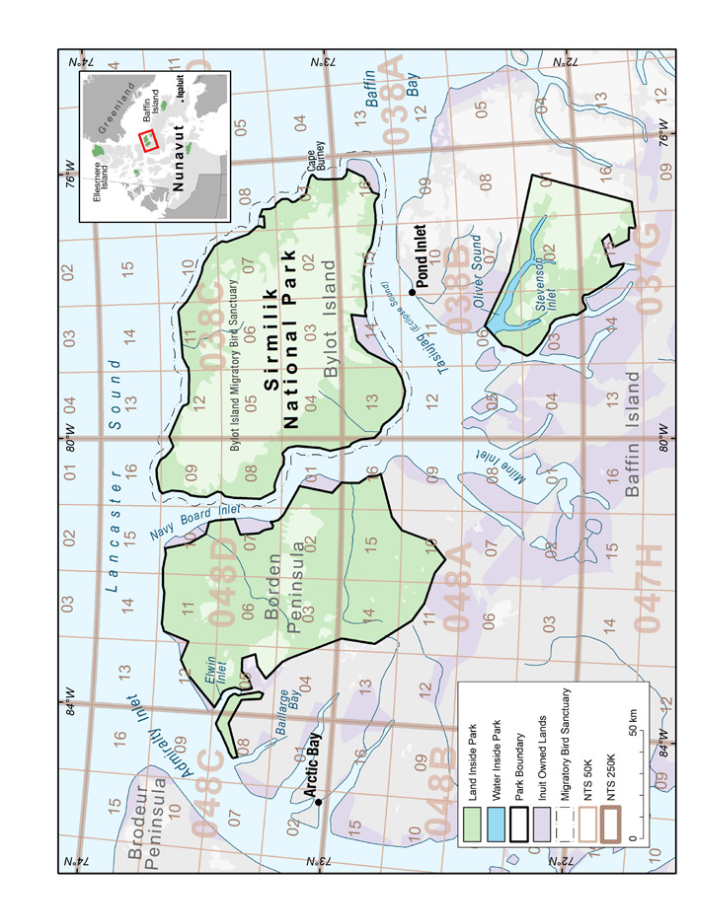

How to Get There
Getting to Sirmilik National Park will take you on a 6-7 day flight from Iqaluit to one of the bordering communities, Arctic Bay or Pond Inlet. From there you can hire a guide and cross the ice in the spring or take a kayak in the summer. (National Geographic, 2011) Due to the remote nature of the park you should be highly experienced in the activity, or hire a guide from an outfitter company recognized by Parks Canada. (Parks Canada Agency, 2025)

Exploring the Park
The park has a multitude of recreational activities like backcountry hiking, skiing, and camping. As well as boating during the summer,and wildlife viewing. No extractive activities are permitted except for the rights given to Inuits as per the Nunavet Land Claim Agreement. The Inuit have a long history in the park, and continue to live within the park. Carrying on hunting, fishing, and trapping as they have in ages past. You are encouraged to meet with Inuit communities to learn about their culture and take part in community events and games. (Parks Canada Agency, 2025)